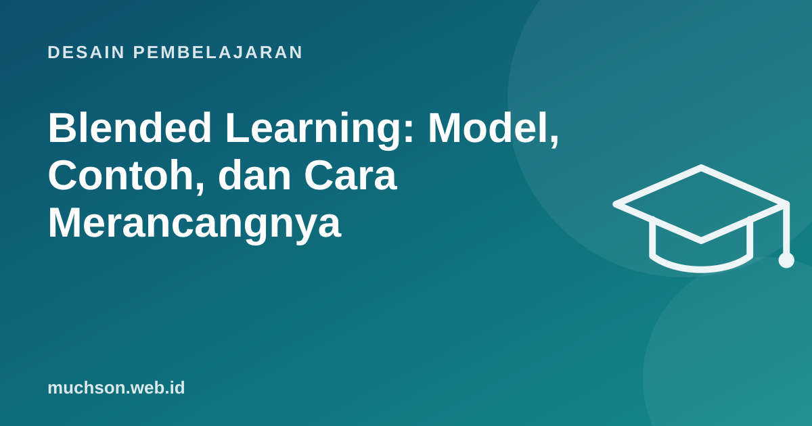

Beranda › Artikel › Desain Pembelajaran
Desain PembelajaranBlended Learning: Model, Contoh, dan Cara Merancangnya
Blended learning bukan sekadar "sebagian online, sebagian offline". Yang membuatnya efektif adalah keputusan sadar: kegiatan apa yang paling baik dilakukan sendiri secara daring, dan kegiatan apa yang membutuhkan waktu bersama. Bila salah membagi, Anda mendapat kelemahan dua dunia sekaligus.

Apa kata penelitian?
Meta-analisis Departemen Pendidikan Amerika Serikat (Means dkk., 2010) menemukan kondisi pembelajaran daring rata-rata sedikit lebih baik daripada tatap muka, dan perbedaannya lebih besar pada pembelajaran campuran. Para peneliti memberi catatan penting: kelompok blended sering mendapat waktu belajar dan elemen pembelajaran tambahan, sehingga keunggulannya tidak bisa dianggap karena medianya semata. Pelajarannya: desain yang membuat perbedaan.
Prinsip pembagian
Empat model populer
Christensen Institute mengelompokkan blended learning ke beberapa model:
Contoh desain: program 4 minggu untuk tim customer success
Gunakan hasil kuis daring sebelum sesi live untuk menentukan apa yang dibahas. Bila 70% peserta salah di soal yang sama, itu agenda pertama sesi bersama.
Kesalahan umum
- Mengulang materi yang sama di sesi live, sehingga peserta yang sudah belajar daring merasa membuang waktu.
- Bagian daring terlalu panjang sehingga tidak dikerjakan.
- Tidak ada akuntabilitas: sesi live mengasumsikan semua sudah belajar daring, padahal tidak.
- Teknologi rumit: peserta harus masuk ke empat platform berbeda.
Tanya jawab
Apa beda blended learning dan hybrid learning?
Apakah cocok untuk anak SD?
Platform apa yang dibutuhkan?
Sumber dan bacaan lanjut
- Means et al. (2010): Evaluation of Evidence-Based Practices in Online Learning, U.S. Department of Education
- Blended Learning Universe (Christensen Institute): Models
- Flipped classroom: cara menerapkan (artikel terkait)